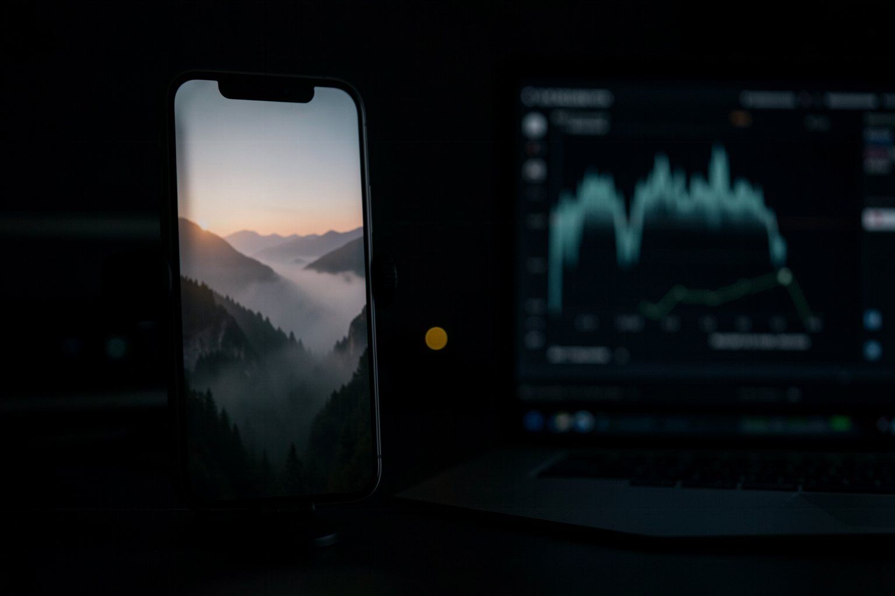

E1 · Phone and reduce
5 minRun "check on mobile and with reduced motion".
Done when: celular: frames-v (filme vertical), reduzir movimento: parado and two times saída: 0.
Lesson 7 · 16 min
Many people open the page on a phone held upright, on a mobile network, and some have asked their system for less motion. A horizontal film cropped to a vertical screen loses its subject; a film that moves by force bothers people who asked it to stop. You check the page on a 390 px phone, with reduced motion on, and cut the weight of the vertical film.
Start the lesson
Goal: check on a 390 px phone, with reduced motion on and on the first load, that the page opens fast and does not force motion.
Click each step.
Speed measured on a real network, Core Web Vitals, and PageSpeed belong to the ARCKHÉSEO course. Here: the weight of the film and the motion.
The checker's two modes on the kit's page.
K=~/projetos/formacao-cARCKHÉ-ia-sites-v72/kit
E=${TMPDIR:-/tmp}/ensaio-sites/a7; rm -rf "$E"; mkdir -p "$E"
node "$K/scripts/servir.mjs" "$K/site" > "$E/url.txt" & S=$!
until U=$(cat "$E/url.txt") && [ -n "$U" ] && curl -s -o /dev/null "$U"; do sleep 0.3; done
node "$K/scripts/verificar.mjs" "$U" --celular; echo "saída: $?"
node "$K/scripts/verificar.mjs" "$U" --reduzir | tail -2; echo "saída: ${PIPESTATUS[0]}"
kill $Shtml.parado .filme { height: auto; }
html.parado .palco { position: relative; height: auto; padding: 62vh 0 48px; background-size: 100% 60vh; background-position: top center; }
html.parado #tela { height: 60vh; bottom: auto; }
html.parado .batida { position: static; opacity: 1 !important; transform: none !important; max-width: 680px; padding: 24px clamp(16px, 6vw, 80px) 0; }K=~/projetos/formacao-cARCKHÉ-ia-sites-v72/kit
E=${TMPDIR:-/tmp}/ensaio-sites/a7; mkdir -p "$E"
node "$K/scripts/servir.mjs" "$K/site" > "$E/url.txt" & S=$!
until U=$(cat "$E/url.txt") && [ -n "$U" ] && curl -s -o /dev/null "$U"; do sleep 0.3; done
node "$K/scripts/verificar.mjs" "${U}erro-sem-reduzir.html" --reduzir | tail -1; echo "saída: ${PIPESTATUS[0]}"
kill $SChromium 156.0.8078.4 (Playwright 1.64.0) · 390×844 quadros: 144 (frames-v/) rolagem 0% → quadro 0 · tela pintada rolagem 50% → quadro 72 · tela pintada rolagem 100% → quadro 143 · tela pintada transbordo horizontal: não celular: frames-v (filme vertical) · 390×844 OK: 3 de 3 posições saída: 0 reduzir movimento: parado (quadro 0 em 0%, 50% e 100%) OK: 3 de 3 posições saída: 0
On the phone, the page chose frames-v; with reduced motion, the frame stayed at 0 in all three positions.
FALHA: com reduzir movimento o filme ainda anda (quadro 0 → 72 → 143) saída: 1
The copy erro-sem-reduzir.html turns off the reduzir option: the film keeps moving even when the system asks for less motion.
In lesson 1, the phone downloaded 3.52 MB and the desktop 1.54 MB. Redoing only the vertical film at 600 px and -q:v 8 fixes it, without dropping frames.
K=~/projetos/formacao-cARCKHÉ-ia-sites-v72/kit
E=${TMPDIR:-/tmp}/ensaio-sites/a7; rm -rf "$E/site"; cp -r "$K/site" "$E/site"
python3 "$K/scripts/peso.py" "$E/site" --orcamento 3 | grep -E "^celular|orçamento"
# the vertical film again: 600 px wide and JPEG -q:v 8 (was 720 px and 6)
bash "$K/scripts/clipe.sh" "$K/exemplos/lente.jpg" "$E/v.mp4" 6 1.0 1.35 1080x1920
bash "$K/scripts/quadros.sh" "$E/v.mp4" "$E/site/frames-v" 600 8
python3 "$K/scripts/peso.py" "$E/site" --orcamento 3 --inicial 0.5 | grep -E "^celular|orçamento|teto"; echo "saída: ${PIPESTATUS[0]}"celular: tudo 3,52 MB · primeira pintura 0,06 MB · rascunho (1 em 8) 0,47 MB visitante mais pesado 3,52 MB · orçamento 3,0 MB: ACIMA do orçamento v.mp4: 6,0 s · 24 fps · 1080×1920 QUADROS: 144 · 600×1066 · 2,2 MB · 24 fps celular: tudo 2,28 MB · primeira pintura 0,05 MB · rascunho (1 em 8) 0,32 MB primeira pintura 0,05 MB · teto 0,5 MB: DENTRO visitante mais pesado 2,28 MB · orçamento 3,0 MB: DENTRO do orçamento saída: 0
The same 144 frames, from 3.52 to 2.28 MB on the phone. Look at the result on the phone before you accept it: -q:v 8 is the limit the course uses.
From the two skills and from what the checker measures.
A phone held upright gets a vertical film: a 9:16 clip from the generator or, in the rehearsal, clipe.sh with 1080x1920.
Without frames-v/, the kit falls back to the horizontal one covering the screen.
Measure the phone separately (peso.py already does) and give it the tightest budget.
Cut width and -q:v before pulling frames.
Reduced motion on = still film and readable text, with no locked scroll.
The on-screen switch leaves the choice to people who didn't change the system, too.
Phone, reduce, and weight, checked.
Run "check on mobile and with reduced motion".
Done when: celular: frames-v (filme vertical), reduzir movimento: parado and two times saída: 0.
Run the checker with --reduzir on erro-sem-reduzir.html (the "common mistake: ignoring reduced motion" block). In your desktop browser, turn on your system's "reduce motion" setting and open the kit's page and the copy with the error.
Done when: FALHA: com reduzir movimento o filme ainda anda and saída: 1.
Run "redo the vertical film lighter". Then try 540 px with -q:v 7 and compare.
Done when: visitante mais pesado 2,28 MB · orçamento 3,0 MB: DENTRO do orçamento and saída: 0.
The explanation appears after you answer.
Question 1 of 4
A 16:9 film covering the screen of a phone held upright (390×844). What happens?
Question 2 of 4
The person turned on "reduce motion" in their system. What does the kit's page do?
Question 3 of 4
The phone is 1.2 MB over budget. What is the first adjustment?
Question 4 of 4
Where do I learn to measure Core Web Vitals and site speed for search?
Choose an option. The explanation appears after your attempt.